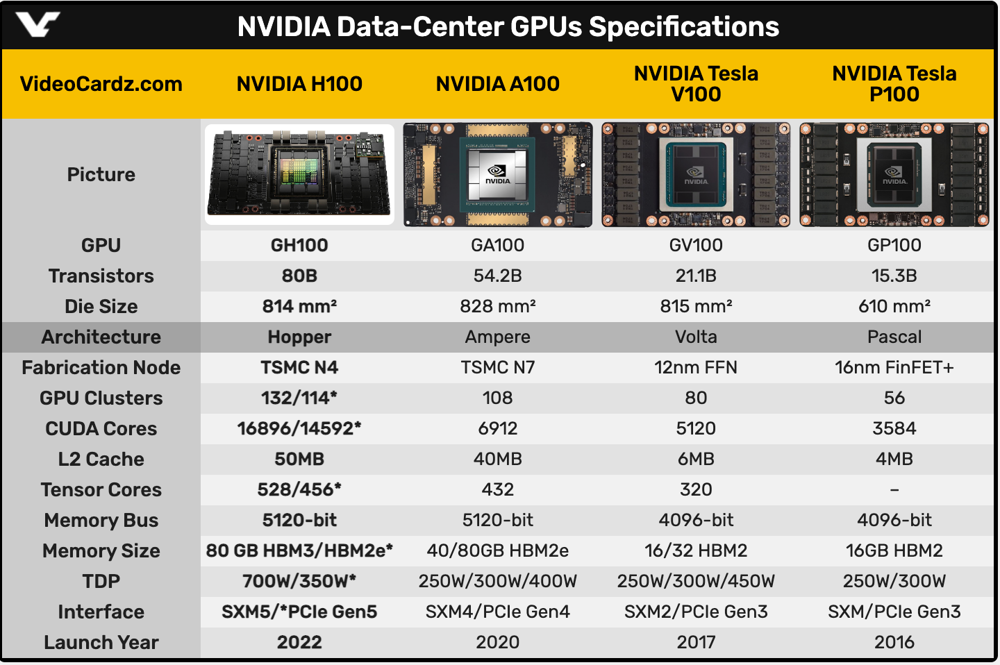

GPU와 CPU의 차이점
GPU는 그래픽 처리에서 사용했다. 최근 GPU는 그래픽 처리 뿐 아니라 병렬 수치 연산에도 이용되고 있다. 딥러닝은 대량의 곱셈, 큰 행렬의 내적 등을 수행하는데 GPU 컴퓨팅을 이용하면 연속을 고속화하여 처리할 수 있다. CPU(CPU, Central Processing Unit)와 GPU(GPU, Grapical Processing Unit)는 공통적으로 마이크로프로세서이다. 둘다 데이터를 처리한다는 공통점이 있다. 그런데 이 둘은 아키텍처가 다르고 용도와 목적이 다르다. CPU는 코어 성능이 중요한 워크 로드에 적합하다. CPU 내부의 ALU(arithmetic Logic Unit)는 순차적인(sequential) 방식으로 명령어를 하나씩 처리하는 특징이 있다. 개별적인 작업과 신속한 작업 처리에 이러한 코어를 집중한다. 연속적인 처리 작업이나 데이터베이스 처리와 같이 특정 코어를 사용해 신속히 처리하는 경우 적합하다. 반면 GPU는 3D 랜더링과 같이 병렬 연산이 필요한 처리에 적합하다. CPU에 비해 많은 코어수를 가지고 있다.

[그림] GPU는 데이터 처리에 더 많은 트랜지스터를 할애 (출처:nvidia)
GPU 회사
GPU를 만드는 회사로 인지도가 높은 순으로 보면 Nvidia, AMD(RYZEN, RADEON), Intel, Apple, ASUS, GIGABYTE, PC Partner Group Limited, UNILEVER PLC(EVGA), MSI, Sapphire Technology Limited 정도가 있다. 이중에 최근 AI에서 화두가 되는 딥러닝 GPU는 주로 Nvidia, AMD 두 회사에서 제공하고 있다.
GPU 발표 히스토리
V100
2017년에 발표되었으다. 테슬라 볼타(V) 100이라 불린다. 2017년 10일 GTC 2017에 V100이 소개 됐다. 이 제품은 볼타 아키텍처를 사용한 첫 프로세서로 소개 되었다. 대만 TSMC의 12나노 공정을 통해 생산 되었다. V100 이전에도 파스칼 100(P100)이라는 제품이 있었다. 이전 제품과 비교해 코어 집적도와 연산성능이 1.4배 높아졌다. 5120개의 CUDA 코어를 탑재하고 있다.
A100
2020년에 발표된 NVIDIA A100 텐서 코어 GPU이다. 암페어 아키텍처(Ampere Architecture)는 이전 제품보다 최대 20배 더 높은 성능을 제공한다. V100에 비해 처리량이 높고 새로운 3세대 텐서 코어(third-generation tensor core)를 포함한다
H100
NVIDIA는 개발자를 위한 글로벌 AI 컨퍼런스인 GTC(GPU Technology Conference) 2022에 H100를 소개했다. H100은 800억 개 트랜지스터를 포함하는 9세대 데이터 중심의 GPU이다. 호퍼 아키텍처(hopper architecture)를 기반으로 한다. 엔비디아의 주장에 따르면 “세계에서 가장 크고 강력한 가속기"라고 한다. 대규모 AI 모델에 완벽하다라고 말했다.

[그림] H100 FP16 텐서 코어는 A100 FP16 텐서코드와 비교하여 처리량이 3배이상임 (출처 : nvidia)
H100은 챗 GPT와 같은 대규모 LLM에 대한 배포가 가능하며, 이전 A100에 비해 GPT-3에서 최대 12배 빠른 추론 성능을 제공한다.
딥러닝에서 사용 가능한 GPU
GPU도 메모리를 가지고 있다. VRAM(video RAM)이라고 불리며 VRAM은 그래픽 프로세서가 접근해 그래픽 처리를 위해 필요한 공간이다. 현재는 그래픽 처리에 최적화된 전용 메모리를 사용하고 있으며 (Graphics Double Data Rate SDRAM)이라고 부른다. 메모리 기준 kaggle을 이용할 경우 4~8GB의 용량이 필요한 것으로 알려져 있다. 그리고 11GB정도이면 연구나 실험이 가능한 정도의 수준으로 알려져 있으며, 24G 또는 이상인 경우 large data의 학습이 가능한 정도로 알려져 있다.
- NVIDIA GeForce RTX 2080 : 8GB(GDDR6)
- NVIDIA GeForce RTX 2070 : 8GB(GDDR6)
- NVIDIA Titan RTX : 24G(VRAM) : 576 텐서 코어, 24GB(VRAM)
- EVGA GeForce RTX 3080 : 8704 CUDA Cores, 10GB(GDDR6), 가성비를 갖춘 제품
- NVIDIA V100(2017) : 16/32G, 640 텐서 코어, 16G or 32G
- NVIDIA A100(2020) : 40/80G, NLINK(3세대, GPU간 대역폭 2배 개선)
- NVIDIA H100(2022) : 80G

[그림] NVIDIA GPU 사양 (출차 : videocardz)
쿠다 코어와 텐서코어의 차이점
코어는 CPU와 달리 GPU는 제조사 마다 다른 이름을 붙인다. 엔비디아는 CUDA 코어, AMD는 컴퓨트 유닛 또는 스트림 프로세서라고 부른다. CUDA(Compute Unified Device Architecture) 코어는 NVIDIA에서 만든 GPU의 병렬 처리를 위한 CPU이다. CUDA 코어는 엔비니아에서 10년간 개발한 대부분의 GPU에 존재했으며 최근에는 행렬 곱셈 프로세스 가속 처리 장치인 텐서 코어가 도입되었다. 텐서 코어는 CUDA 코어에 비해 빠르게 계산할 수 있다. CUDA 코어는 클럭 사이클당 하나의 연산을 수행하지만 정확하고 텐서 코어는 클럭 사이클당 여러번 연산을 수행해 속도가 빠르다. 텐서 코어는 딥러닝 학습시 빠르면서 높은 정확도의 모델을 만들때 사용한다.
멀티 GPU
GPU는 1개로 사용할 수 있지만 필요에 따라 처리량을 늘리고 싶은 경우가 있다 이런 경우는, GPU 장착 숫자를 2개 이상으로 늘릴 수 있다. 다중 GPU를 제조하는 대표적인 회사로 NVIDIA와 AMD가 있다. NVIDIA는 SLI(scalable linked interface)라는 기술로 연결을 지원하고 AMD는 CrossFire라는 기술로 지원한다. 최근 NVIDIA의 경우 SLI대신 GeForce 20 이후부터 SLI라는 기술 대신 NVLINK라는 기술을 이용해 다중 GPU를 지원한다. 기존 SLI는 8G 중에 사용할 공간 4G만 공유를 하게 되어 GPU 2개를 이용하게 되었을때 8G의 용량 낭비가 되지만 NVLINK는 이런한 기술적인 단점을 극복하였다. 최근에는 멀티 GPU와 결합해 범용 딥러닝을 위한 맞춤형 AI 서버 제품이 만들어지기도 하는데, 대표적으로 NVIDIA DGX System(H/W)이다. NVIDIA DGX A100는 NVIDIA A100이 총 8개가 포함되어 있으며 범용 딥러닝을 위한 H/W를 포함하고 있다.